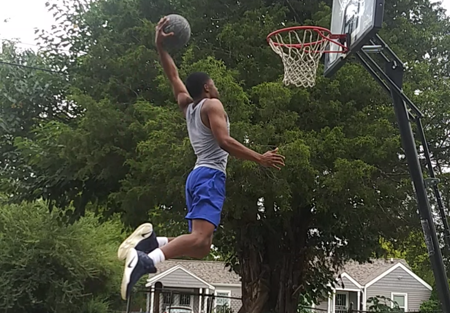

Hall of B-Ball LORE!
The Hall of B-Ball was founded by Felando King in February of 2022 as a way to express his love for basketball and to educate newer fans on the sport. Growing up, Felando was always in a basketball environment. His father, as well as his brother and sister played the sport of basketball so, it was an obvious choice of activity for Felando. Now that Felando has been involved with the sport for almost a decade, he is ready to share his experiences with all of you!
